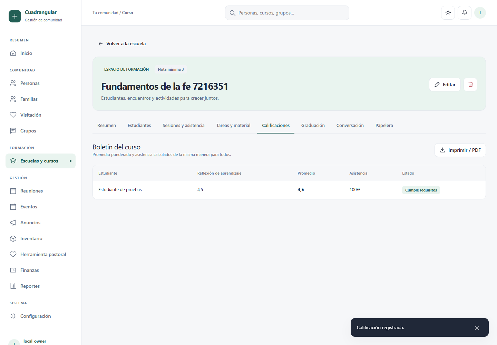

VENTAS · INVENTARIO · LOGÍSTICA
Distriesteticyz
Sistema de gestión comercial que reúne pedidos, inventario, bodega, empaque y seguimiento de entregas.
Sistema comercial · nueva versión en validación
Ver proyectoSoy Juan Sebastián. Desarrollo aplicaciones e integro APIs para conectar ventas, inventario y atención.
Disponible para oportunidades remotas
Aplicaciones para ventas, atención comercial y gestión de organizaciones.
Sistema de gestión comercial que reúne pedidos, inventario, bodega, empaque y seguimiento de entregas.
Sistema comercial · nueva versión en validación
Ver proyecto
Espacio de trabajo para preguntas y posventa de Mercado Libre, revisión de publicaciones y consulta de reportes.
Beta funcional · demostración con datos ficticios
Ver proyecto
Sistema de gestión para una iglesia: personas, visitación, cursos, asistencia, ayudas, inventario y eventos.
Versión modular · validación en entorno de pruebas
Ver proyectoBogotá, Colombia
Tengo 3 años de experiencia desarrollando sistemas para empresas y organizaciones. Trabajo con procesos de ventas, inventario, preparación de pedidos y seguimiento de clientes.
Formación en Ingeniería Mecatrónica en la Universidad Nacional de Colombia, sede Bogotá.
PHP, Laravel, React, JavaScript y bases de datos SQL.
Mercado Libre, WhatsApp Cloud API y OpenAI.
Rotación de productos, seguimiento de ventas y oportunidades de recuperación de clientes.
WordPress, Elementor y WooCommerce para sitios y catálogos administrables.
Busco oportunidades remotas en desarrollo Full Stack, backend e integración de sistemas. Puedes escribirme para conversar sobre una vacante o conocer más de mis proyectos.